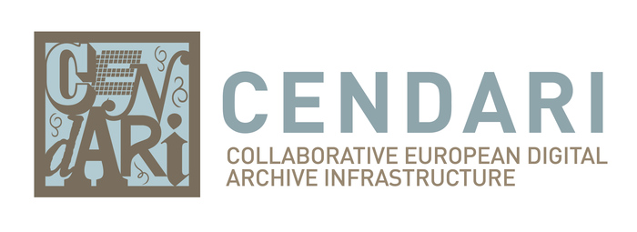
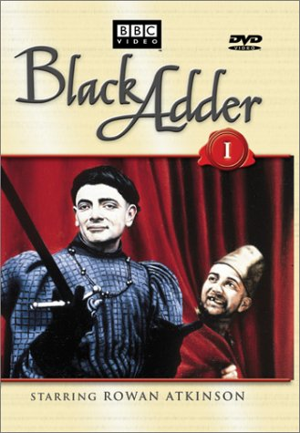
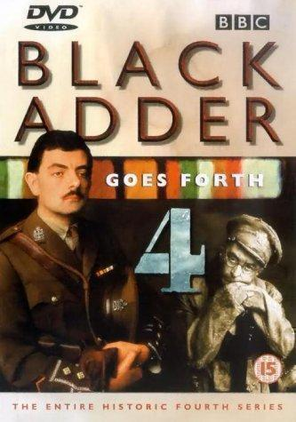
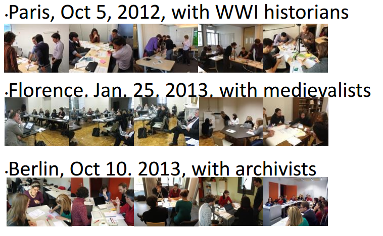
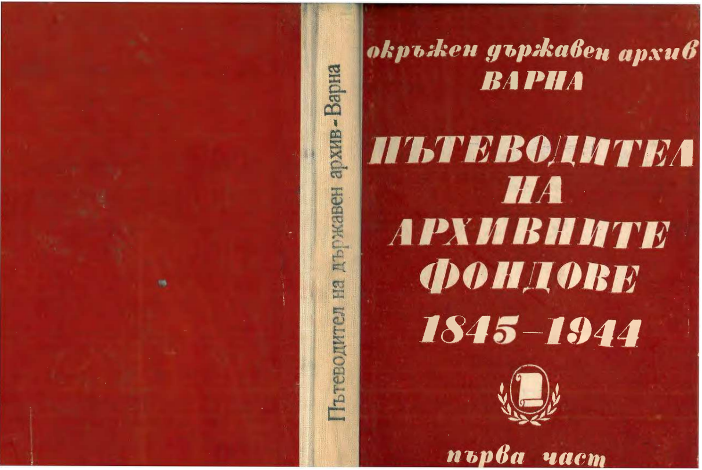
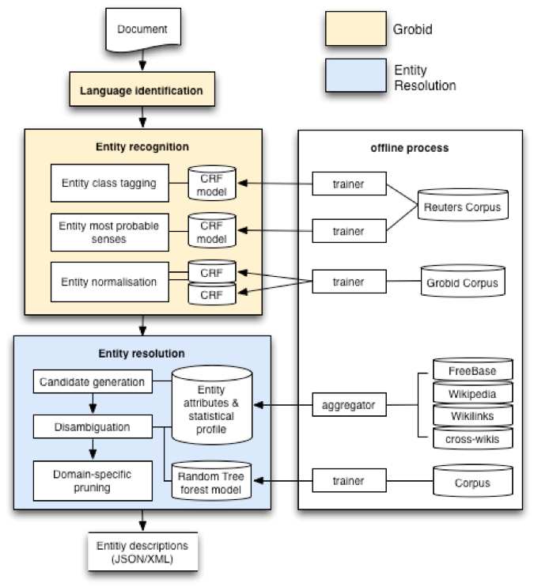
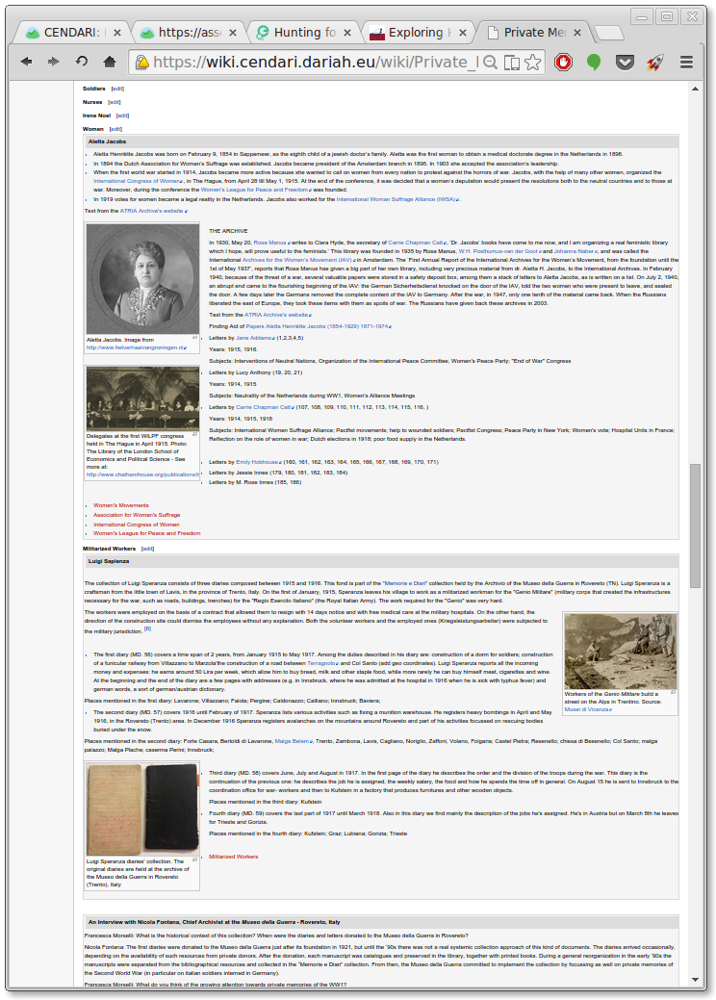

Cendari: Leveraging Natural Language Processing for Research in Historical Archives
Alexander O'Connor (TCD), Natasa Bulatovic (MPDL), Patrice Lopez (INRIA), Nadia Boukhelifa (INRIA), Carsten Thiel (UGoe)

Cendari aims to be at the cross-roads between Archivists, Historians and Technologists. The focus is on resource discovery and use from less-resourced archives.
Use Cases
 To integrate digital archival resources for medieval and modern history, leveraging extant networks and projects to enhance the discoverability and usability of the resources.
There is a tremendous amount of support for what the project is trying to do, both in terms of content, knowledge but perhaps more importantly in terms of service-level infrastructure.
Recognising what is desirable, what is useful and what is practical.
The over-riding goal of Cendari is to work from what users need, and what needs users express. It's a big challenge to realise that different constituencies (historians, archivists, technologists) both within the project and outside of it have often-competing goals, and often poor awareness of both what is possible, and what is desirable.
The Not- and Never-Will-Be- Digitised
Multilingual Named Entity Recognition
The data in this case is digitised paper finding aids for the Bulgarian state archives. How do you locate fonds relevant to WW1 from these documents, without using extensive hand-built background knowledge?
Named Entity Recognition for the Digital Humanities
- Entity Identification from existing datasets (Random Tree Forest)
- Customisation API
- Large number of classes (currently 26)
- Inter-language known entity detection using Freebase, Wikipedia
- Commonness, Global vs. Local Context, NER-features, concept-features
- User Defined entities (Further disambiguation challenges)
Dialogue about strengths
& (more importantly) Weaknesses
A key aspect is to
EAD, EAG, XML, PDF, TXT, TIFF, DOC
Paper records and finding aids
Language & Culture
Archival Research Guide
- Methodology
- Theme
- Content
- Sources
- People
Cendari & the Europeana API
- Users need tools that fit their existing workflows
- Cannot assume the availability of full text
- Users are happy for others to contribute, but may not be so keen to share themselves
- PDFs are everywhere
- XML is a variable creature